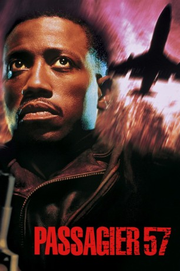

#2488 Passagier 57
Alternativ: Passenger 57
 
 IMDB-Wertung: 5.9 / 10
IMDB-Wertung: 5.9 / 10  Metascore: 0
Metascore: 0 
Der ehemalige Polizist John Cutter bildet Sicherheitspersonal für Linienflüge aus und wird von einer Fluggesellschaft als Security-Chef engagiert. Kurz vor seinem ersten Dienstantritt gerät er bei einem Flug nach Los Angeles in eine Ausnahmesituation: Top-Terrorist Charles Rane, der eigentlich in dem bewachten Flieger nach L.A. überführt werden soll, wird von seinen Kumpanen befreit. Die Verbrecher übernehmen die Kontrolle über die Maschine und nehmen die rund 200 Passagiere als Geiseln. Einzig Cutter und die Stewardess Marti Slayton können sich unbemerkt an Bord verstecken und nehmen den scheinbar aussichtslosen Kampf gegen die Flugzeugentführer auf...
Jahr: 1992
Dauer: 84 Minuten
FSK: 16
Land: USA Studio: Warner Bros.Tonspuren: DD5.1 - ,
Untertitel:
Auflösung: 1080p (1920x800) Größe: 6440 MB
Genre: Action, Krimi, Thriller
Regisseur: Kevin Hooks
Drehbuch: Stewart Raffill, Dan Gordon, David Loughery, Dan Gordon
Soundtrack: Stanley Clarke
Darsteller:
 Wesley Snipes als John Cutter
Wesley Snipes als John Cutter- Bruce Payne als Charles Rane
 Tom Sizemore als Sly Delvecchio
Tom Sizemore als Sly Delvecchio Bruce Greenwood als Stuart Ramsey
Bruce Greenwood als Stuart Ramsey- Robert Hooks als Dwight Henderson
 Elizabeth Hurley als Sabrina Ritchie
Elizabeth Hurley als Sabrina Ritchie- Michael Horse als Forget
 Marc Macaulay als Vincent
Marc Macaulay als Vincent Ernie Lively als Chief Biggs
Ernie Lively als Chief Biggs- William Edward Roberts als Matthew
- Kareen Germain als Security Attendant
 Lesa Thurman als Norman's Mother
Lesa Thurman als Norman's Mother- Janet Elder als Screaming Woman
 Tom Nowicki als Sly's Assistant
Tom Nowicki als Sly's Assistant Brett Rice als Cop #1
Brett Rice als Cop #1- Renee Behan als Passenger , uncredited
- Brock Burnett als SWAT Sharpshooter , uncredited
- Sven Granlund als Pilot Extra , uncredited
- Ginger Stanley als Plane Passenger , uncredited
- Alex Datcher als Marti Slayton
- Duchess Tomasello als Mrs. Edwards
- James Short als Allen
- Joel Fogel als Dr. Bauman
- Jane McPherson als Nurse
- Winston Bedford als Doctor
- Lori Bedford als Surgical Receptionist
- Kent Lindsey als Agent Claflin
- Rand MacPherson als SWAT Commander
- Lou Bedford als Attorney Phillips
- Elena Ayala als Lisa Cutter
- Mike Speller als Headwaiter
 Michael H. Moss als Agent Manning
Michael H. Moss als Agent Manning- Jim McDonald als Agent Duncan
- Zachary McLemore als Norman
- Alicia Allred als Flight Attendant
- Frank Causey als Captain Whitehurst
- Marty Connell als First Officer
- Frank Hart als Flight Engineer
- Linda Vick als Receptionist
- Robert Midden als Pistol-Whipped Passenger
- Dennis Letts als Frank Allen
- Janis Benson als Nora Allen
- Gary Rorman als Douglas
- Lindsey Diamond als Hostage Woman
- Dean Carlberg als Helicopter Pilot
- Henry J. McGauley als Store Hold-Up Man
- Michael Conner als FBI Agent
- Carl Cole als Sharpshooter
- Jack Gibson als Reporter #1
- Lisa Capriani als Reporter #2
Datei: X:\1992\Passagier 57 (1992, FSK16, 1920x800).mkv seit 13.11.2015
Festplatte: HD 1992-1995
 Es gibt insgesamt 57 Filme in der Gruppe '1992'
Es gibt insgesamt 57 Filme in der Gruppe '1992'